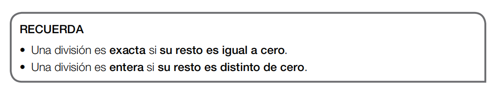

核心概念 (Concepto):
除法就是均分。除法的四个部分是：被除数、除数、商和余数。
Una división es un reparto en partes iguales. Los términos son: dividendo, divisor, cociente y resto.

记忆要点 (Recuerda):
整除：余数等于0。
有余数除法：余数不等于0。
Exacta: si su resto es igual a cero.
Entera: si su resto es distinto de cero.

重要规则 (Reglas):
1. 余数必须小于除数。
2. 被除数 = 除数 × 商 + 余数。
1. El resto es menor que el divisor.
2. Dividendo = divisor × cociente + resto.

步骤 (Paso):
当被除数的前两位数字大于或等于除数时，直接取前两位开始计算。
Cuando las dos primeras cifras del dividendo forman un número mayor o igual que el divisor, se toman para comenzar.

步骤 (Paso):
当被除数的前两位数字小于除数时，需要取前三位数字开始计算。
Cuando las dos primeras cifras son menores que el divisor, se toman las tres primeras cifras.

注意 (Atención):
如果在计算过程中，落下的数字组成的新数比除数小，就要在商的位置写0，然后再落下下一位数字。
Si se forma un número menor que el divisor, se escribe 0 en el cociente y se baja la siguiente cifra.

多加练习 (Más práctica):
熟能生巧，请仔细观察这个例子的计算过程。
La práctica hace al maestro. Observa detenidamente el proceso de cálculo en este ejemplo.

关键点 (Punto clave):
请记住：在每一步计算中，余数都必须比除数小。
Recuerda: en cada paso, el resto siempre debe ser menor que el divisor.

保持耐心 (Paciencia):
即使数字变大了，方法也是一样的。一步一步来！
Aunque los números sean más grandes, el método es el mismo. ¡Paso a paso!

观察数字 (Observa):
注意被除数中是否有0，或者是否需要连续退位。
Fíjate si hay ceros en el dividendo o si necesitas llevar números.

学以致用 (Aplicación):
我们可以用除法来解决生活中的平均分配问题。
Podemos usar la división para resolver problemas de reparto equitativo en la vida real.

恭喜你 (¡Felicidades!):
你已经学习了所有的除法规则。现在通过最后一张图来复习吧！
Has aprendido todas las reglas de la división. ¡Repasemos con esta última imagen!